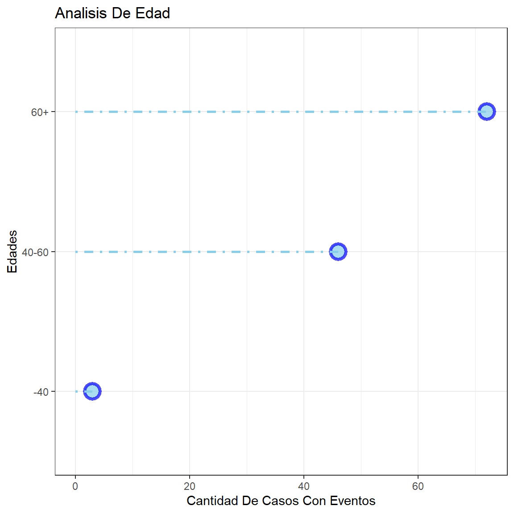

Introducción
En la siguiente presentación, se analizará tanto gráficamente como analíticamente ciertos datos de personas con riesgo a padecer eventos cardiovasculares. Estos datos fueron provistos por el Hospital Austral, en base a 1002 casos en los cuales el paciente se presentó en el hospital con síntomas asociados a un evento cardiovascular, pero que no necesariamente haya, posteriormente, sufrido un evento. Con estos datos se busca poder mostrar que características son determinantes para saber si el paciente debe ser internado de urgencia o no.
Visualización De Los Datos
A continuación, se mostrarán los tipos de datos que se eligieron.

Análisis de Pacientes por Presencia de Eventos
A continuación, vamos a observar el porcentaje de personas que padecen eventos y como afecta la edad este porcentaje
Eventos Cardíacos Totales
Este gráfico muestra la cantidad de personas que padecieron eventos cardiovasculares y el porcentaje de personas que no han padecido eventos.
PacientesConEventos PacientesSinEventos
[1,] 121 881Eventos Analizados Por Edad
En este gráfico está representado las diferentes edades de las personas que sufrieron algún evento.
Análisis De Edad Por 3 Grupos

Analisis de presencia de Eventos por el factor de Obesidad
Ahora vamos a observar cómo influye la obesidad al respecto de la cantidad de eventos, analizando la diabetes y la obesidad.
Obesos
En este gráfico puede verse representado el porcentaje de personas que padecen obesidad y que sufrieron algún evento cardiovascular.

CantidadDeObesos CantidadDeNoObesos
[1,] 222 780Obesos Diabéticos Con Eventos
En este gráfico, a partir de los obesos que sufrieron un evento se muestra cuantos de estos son diabéticos.

CantidadDeObesos CantidadDeObesosConDiabetes
[1,] 222 65Eventos Analizados Por Revascularización, Cantidad De Episodios & Repetición Del Dolor
En este gráfico podemos ver el porcentaje de las personas que tuvieron eventos y que también sufrieron de episodios previos con repeticiones de dolores y que fueron re vascularizados.
Dolores
En los siguientes dos gráficos, se ven representados el total de dolores y de que tipo son estos, y además en el segundo grafico se tomaron los dolores de personas que hayan sufrido algún evento.
Dolores Totales
Dolores Solo Con Personas Con Eventos Card
Tabaquismo e Hipertensión
En este gráfico, lo que se muestra es la relación entre la cantidad de personas que sufrieron un Evento, fuman tabaco y son Hipertensas. En cada burbuja se muestra la cantidad de personas que sufren tal característica y si se cruzan, muestra las personas que tienen ambos rasgos.
Anginosos VS Múltiples Dolores
En el siguiente gráfico se busca mostrar cuantos pacientes que sufrieron de un Evento, presentan Síndrome Anginoso y cuantos presentan Múltiples Dolores.